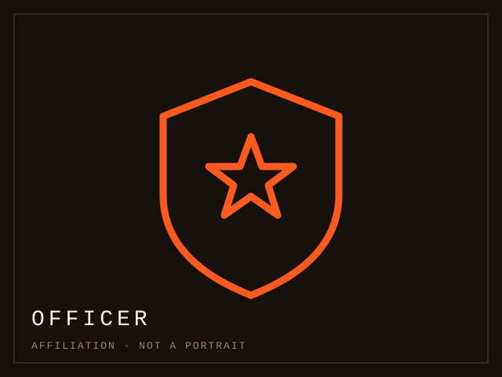

Today on this way · 3 NOV 2026 · Today's entry
The landlord
A named individual with access to your home, your deposits and your address, met in person, repeatedly, under stress. A duty, a door, and no room in the role for reciprocity.
Read the case